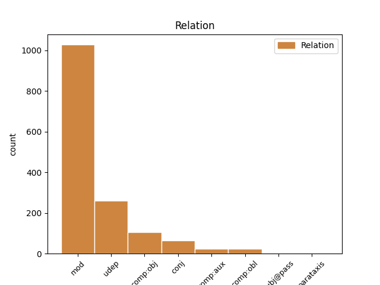

Distribution of features within this leaf

Agreement Rules sorted by frequency.
- When the dependent token is the modifer(mod) of the head token, and the head token is NOUN
1 அந்தப் _ _ _ _ 0 _ _ _
2 பணியை _ _ _ _ 0 _ _ _
3 மனித _ _ _ _ 0 _ _ _
4 நேய நேயம் PROPN NO--3SN-- Gender=Neut|Number=Sing|Person=3 5 mod _ LTranslit=nēyam|Translit=nēya
5 மனப்பான்மையோடு மனப்பான்மை NOUN NNS-3SN-- Case=Com|Gender=Neut|Number=Sing|Person=3 0 _ _ _
6 நாம் _ _ _ _ 0 _ _ _
7 நிறைவேற்றுவோம் _ _ _ _ 0 _ _ _
8 என்ற _ _ _ _ 0 _ _ _
9 அந்த _ _ _ _ 0 _ _ _
10 உணர்வைப் _ _ _ _ 0 _ _ _
11 பெற்று _ _ _ _ 0 _ _ _
12 மக்களைக் _ _ _ _ 0 _ _ _
13 காப்பாற்ற _ _ _ _ 0 _ _ _
14 வேண்டும் _ _ _ _ 0 _ _ _
15 - _ _ _ _ 0 _ _ _
16 மக்களுக்குப் _ _ _ _ 0 _ _ _
17 பணியாற்ற _ _ _ _ 0 _ _ _
18 வேண்டும் _ _ _ _ 0 _ _ _
19 . _ _ _ _ 0 _ _ _
1 இந்தியாவில் _ _ _ _ 0 _ _ _
2 மத்திய _ _ _ _ 0 _ _ _
3 அரசினுடைய _ _ _ _ 0 _ _ _
4 பணத்தை _ _ _ _ 0 _ _ _
5 அவர்கள் _ _ _ _ 0 _ _ _
6 நாடாளுமன்ற _ _ _ _ 0 _ _ _
7 தொகுதிகளுக்க் _ _ _ _ 0 _ _ _
8 ஆக _ _ _ _ 0 _ _ _
9 ஒதுக்குகின்ற _ _ _ _ 0 _ _ _
10 பணம் _ _ _ _ 0 _ _ _
11 ஏற்கெனவே _ _ _ _ 0 _ _ _
12 ஆங்காங்கே _ _ _ _ 0 _ _ _
13 நாடாளுமன்ற _ _ _ _ 0 _ _ _
14 தொகுதிகளுக்க் _ _ _ _ 0 _ _ _
15 ஆகச் _ _ _ _ 0 _ _ _
16 செலவழிக்கப் _ _ _ _ 0 _ _ _
17 படுகிற _ _ _ _ 0 _ _ _
18 நிலைய் _ _ _ _ 0 _ _ _
19 இருந்தால் _ _ _ _ 0 _ _ _
20 உம் _ _ _ _ 0 _ _ _
21 கூட _ _ _ _ 0 _ _ _
22 , _ _ _ _ 0 _ _ _
23 சட்டப் _ _ _ _ 0 _ _ _
24 பேரவைத் _ _ _ _ 0 _ _ _
25 தொகுதிகளுக்கு _ _ _ _ 0 _ _ _
26 ஒதுக்கப் _ _ _ _ 0 _ _ _
27 படுகிற _ _ _ _ 0 _ _ _
28 பணத்தை _ _ _ _ 0 _ _ _
29 - _ _ _ _ 0 _ _ _
30 அந்தத் _ _ _ _ 0 _ _ _
31 தொகுதி _ _ _ _ 0 _ _ _
32 மேம்பாட்டுக்காகச் _ _ _ _ 0 _ _ _
33 செலவழிக்க _ _ _ _ 0 _ _ _
34 வேண்டும் _ _ _ _ 0 _ _ _
35 என்று _ _ _ _ 0 _ _ _
36 முதல் _ _ _ _ 0 _ _ _
37 குரல் _ _ _ _ 0 _ _ _
38 கொடுத்தது கொடு VERB VzND3SNAA Case=Nom|Gender=Neut|Number=Sing|Person=3|Polarity=Pos|Tense=Past|VerbForm=Ger|Voice=Act 0 _ _ _
39 தமிழகத்தில் தமிழகம் PROPN NEL-3SN-- Case=Loc|Gender=Neut|Number=Sing|Person=3 38 udep _ LTranslit=tamilakam|Translit=tamilakattil
40 தான் _ _ _ _ 0 _ _ _
41 . _ _ _ _ 0 _ _ _
1 அரசுக்கு அரசு NOUN NND-3SN-- Case=Dat|Gender=Neut|Number=Sing|Person=3 3 udep _ LTranslit=aracu|Translit=aracukku
2 ஒத்துழைக்க _ _ _ _ 0 _ _ _
3 வேண்டும் வேண்டு AUX VR-F3SNAA Gender=Neut|Mood=Ind|Number=Sing|Person=3|Polarity=Pos|Tense=Fut|VerbForm=Fin|Voice=Act 0 _ _ _
4 என _ _ _ _ 0 _ _ _
5 மருத்துவர்கள் _ _ _ _ 0 _ _ _
6 , _ _ _ _ 0 _ _ _
7 செவிலியர்கள் _ _ _ _ 0 _ _ _
8 உள்ளிட்ட _ _ _ _ 0 _ _ _
9 மருத்துவப் _ _ _ _ 0 _ _ _
10 பணியாளர்கள் _ _ _ _ 0 _ _ _
11 யாரையும் _ _ _ _ 0 _ _ _
12 கேட்கவ் _ _ _ _ 0 _ _ _
13 இல்லை _ _ _ _ 0 _ _ _
14 . _ _ _ _ 0 _ _ _
1 தமிழ்நாடு _ _ _ _ 0 _ _ _
2 அரசு _ _ _ _ 0 _ _ _
3 தான் _ _ _ _ 0 _ _ _
4 அதைச் அது NOUN NNA-3SN-- Case=Acc|Gender=Neut|Number=Sing|Person=3 5 comp:obj _ LTranslit=atu|Translit=ataic
5 செய்தது செய் VERB Vr-D3SNAA Gender=Neut|Mood=Ind|Number=Sing|Person=3|Polarity=Pos|Tense=Past|VerbForm=Fin|Voice=Act 0 _ _ _
6 . _ _ _ _ 0 _ _ _
1 அரசுக்கு _ _ _ _ 0 _ _ _
2 ஒத்துழைக்க _ _ _ _ 0 _ _ _
3 வேண்டும் _ _ _ _ 0 _ _ _
4 என _ _ _ _ 0 _ _ _
5 மருத்துவர்கள் மருத்துவர் NOUN NNN-3PA-- Animacy=Anim|Case=Nom|Gender=Com|Number=Plur|Person=3 0 _ _ _
6 , _ _ _ _ 0 _ _ _
7 செவிலியர்கள் _ _ _ _ 0 _ _ _
8 உள்ளிட்ட _ _ _ _ 0 _ _ _
9 மருத்துவப் _ _ _ _ 0 _ _ _
10 பணியாளர்கள் பணியாளர் NOUN NNN-3PA-- Animacy=Anim|Case=Nom|Gender=Com|Number=Plur|Person=3 5 conj _ LTranslit=paṇiyāḷar|Translit=paṇiyāḷarkaḷ
11 யாரையும் _ _ _ _ 0 _ _ _
12 கேட்கவ் _ _ _ _ 0 _ _ _
13 இல்லை _ _ _ _ 0 _ _ _
14 . _ _ _ _ 0 _ _ _
1 போக்குவரத்து _ _ _ _ 0 _ _ _
2 வசதிகள் _ _ _ _ 0 _ _ _
3 இல்லாததால் இல் VERB VzIT3SNAA Case=Ins|Gender=Neut|Number=Sing|Person=3|Polarity=Pos|VerbForm=Ger|Voice=Act 9 mod _ LTranslit=il|Translit=illātatāl
4 அரசு _ _ _ _ 0 _ _ _
5 அலுவலகங்களில் _ _ _ _ 0 _ _ _
6 உம் _ _ _ _ 0 _ _ _
7 வருகை _ _ _ _ 0 _ _ _
8 குறைவாகவே _ _ _ _ 0 _ _ _
9 இருந்தத் இரு VERB VzND3SNAA Case=Nom|Gender=Neut|Number=Sing|Person=3|Polarity=Pos|Tense=Past|VerbForm=Ger|Voice=Act 0 _ _ _
10 ஆக _ _ _ _ 0 _ _ _
11 அதிகார _ _ _ _ 0 _ _ _
12 வட்டாரங்கள் _ _ _ _ 0 _ _ _
13 தெரிவித்தன _ _ _ _ 0 _ _ _
14 . _ _ _ _ 0 _ _ _
1 திருடிச் _ _ _ _ 0 _ _ _
2 சென்ற _ _ _ _ 0 _ _ _
3 சிலையை _ _ _ _ 0 _ _ _
4 திருப்பி _ _ _ _ 0 _ _ _
5 கொடுத்திடும் _ _ _ _ 0 _ _ _
6 ஆறு _ _ _ _ 0 _ _ _
7 அந்த _ _ _ _ 0 _ _ _
8 கோயில் கோயில் NOUN NNL-3SN-- Case=Loc|Gender=Neut|Number=Sing|Person=3 11 udep _ LTranslit=kōyil|Translit=kōyil
9 நிர்வாக _ _ _ _ 0 _ _ _
10 செய்தித் _ _ _ _ 0 _ _ _
11 தொடர்பாளர் தொடர்பாளர் NOUN NNN-3SH-- Case=Nom|Gender=Com|Number=Sing|Person=3|Polite=Form 0 _ _ _
12 சிராக் _ _ _ _ 0 _ _ _
13 பட் _ _ _ _ 0 _ _ _
14 வேண்டுகோள் _ _ _ _ 0 _ _ _
15 விடுத்த் _ _ _ _ 0 _ _ _
16 உள்ளார் _ _ _ _ 0 _ _ _
17 . _ _ _ _ 0 _ _ _
1 மனித _ _ _ _ 0 _ _ _
2 நேயத்துடன் _ _ _ _ 0 _ _ _
3 பணியாற்ற _ _ _ _ 0 _ _ _
4 வேண்டும் _ _ _ _ 0 _ _ _
5 என்று _ _ _ _ 0 _ _ _
6 டாக்டர்கள் _ _ _ _ 0 _ _ _
7 மற்றும் _ _ _ _ 0 _ _ _
8 செவிலியர்களுக்கு _ _ _ _ 0 _ _ _
9 முதல்வர் _ _ _ _ 0 _ _ _
10 கருணாநிதி _ _ _ _ 0 _ _ _
11 வேண்டுகோள் வேண்டுகோள் NOUN NNN-3SN-- Case=Nom|Gender=Neut|Number=Sing|Person=3 12 comp:obl _ LTranslit=vēṇṭukōḷ|Translit=vēṇṭukōḷ
12 விடுத்தார் விடு VERB Vr-D3SHAA Gender=Com|Mood=Ind|Number=Sing|Person=3|Polarity=Pos|Polite=Form|Tense=Past|VerbForm=Fin|Voice=Act 0 _ _ _
13 . _ _ _ _ 0 _ _ _
1 இந்தியாவில் _ _ _ _ 0 _ _ _
2 முதன்முதலில் _ _ _ _ 0 _ _ _
3 தொகுதி _ _ _ _ 0 _ _ _
4 மேம்பாட்டு _ _ _ _ 0 _ _ _
5 நிதியை _ _ _ _ 0 _ _ _
6 பொதுப் _ _ _ _ 0 _ _ _
7 பணிகளுக்கு _ _ _ _ 0 _ _ _
8 பயன்படுத்திக் _ _ _ _ 0 _ _ _
9 கொள்ளல் கொள் AUX VZNT3SNAA Case=Nom|Gender=Neut|Number=Sing|Person=3|Polarity=Pos|VerbForm=Ger|Voice=Act 10 comp:aux _ LTranslit=koḷ|Translit=koḷḷal
10 ஆம் ஆகு AUX VR-T3SNAA Gender=Neut|Mood=Ind|Number=Sing|Person=3|Polarity=Pos|VerbForm=Fin|Voice=Act 0 _ _ _
11 என்கிற _ _ _ _ 0 _ _ _
12 அனுமதியை _ _ _ _ 0 _ _ _
13 மத்திய _ _ _ _ 0 _ _ _
14 அரசு _ _ _ _ 0 _ _ _
15 ஏற்கெனவே _ _ _ _ 0 _ _ _
16 நாடாளுமன்ற _ _ _ _ 0 _ _ _
17 உறுப்பினர்களுக்கு _ _ _ _ 0 _ _ _
18 வழங்கி _ _ _ _ 0 _ _ _
19 இருந்தது _ _ _ _ 0 _ _ _
20 . _ _ _ _ 0 _ _ _
1 அந்தப் _ _ _ _ 0 _ _ _
2 பணியை _ _ _ _ 0 _ _ _
3 மனித _ _ _ _ 0 _ _ _
4 நேய _ _ _ _ 0 _ _ _
5 மனப்பான்மையோடு _ _ _ _ 0 _ _ _
6 நாம் _ _ _ _ 0 _ _ _
7 நிறைவேற்றுவோம் _ _ _ _ 0 _ _ _
8 என்ற _ _ _ _ 0 _ _ _
9 அந்த _ _ _ _ 0 _ _ _
10 உணர்வைப் _ _ _ _ 0 _ _ _
11 பெற்று _ _ _ _ 0 _ _ _
12 மக்களைக் _ _ _ _ 0 _ _ _
13 காப்பாற்ற _ _ _ _ 0 _ _ _
14 வேண்டும் வேண்டு AUX VR-F3SNAA Gender=Neut|Mood=Ind|Number=Sing|Person=3|Polarity=Pos|Tense=Fut|VerbForm=Fin|Voice=Act 18 mod _ LTranslit=vēṇṭu|Translit=vēṇṭum
15 - _ _ _ _ 0 _ _ _
16 மக்களுக்குப் _ _ _ _ 0 _ _ _
17 பணியாற்ற _ _ _ _ 0 _ _ _
18 வேண்டும் வேண்டு AUX VR-F3SNAA Gender=Neut|Mood=Ind|Number=Sing|Person=3|Polarity=Pos|Tense=Fut|VerbForm=Fin|Voice=Act 0 _ _ _
19 . _ _ _ _ 0 _ _ _
1 அந்தக் _ _ _ _ 0 _ _ _
2 கட்டடங்களில் _ _ _ _ 0 _ _ _
3 ஏய் _ _ _ _ 0 _ _ _
4 இருந்து _ _ _ _ 0 _ _ _
5 பணியாற்றுகிற _ _ _ _ 0 _ _ _
6 மருத்துவர்கள் மருத்துவர் NOUN NNN-3PA-- Animacy=Anim|Case=Nom|Gender=Com|Number=Plur|Person=3 17 mod _ LTranslit=maruttuvar|SpaceAfter=No|Translit=maruttuvarkaḷ
7 , _ _ _ _ 0 _ _ _
8 அந்த _ _ _ _ 0 _ _ _
9 மருத்துவர்களுக்கு _ _ _ _ 0 _ _ _
10 உதவியாக _ _ _ _ 0 _ _ _
11 இருக்கிற _ _ _ _ 0 _ _ _
12 செவிலியர்கள் _ _ _ _ 0 _ _ _
13 உள்ளிட்ட _ _ _ _ 0 _ _ _
14 மற்ற _ _ _ _ 0 _ _ _
15 மருத்துவத்துறை _ _ _ _ 0 _ _ _
16 நண்பர்கள் _ _ _ _ 0 _ _ _
17 அனைவரும் அனைவர் PRON RpN-3PA-- Animacy=Anim|Case=Nom|Gender=Com|Number=Plur|Person=3|PronType=Prs 0 _ _ _
18 ஏத் _ _ _ _ 0 _ _ _
19 ஓ _ _ _ _ 0 _ _ _
20 ஒரு _ _ _ _ 0 _ _ _
21 கடமை _ _ _ _ 0 _ _ _
22 ஆற்றுகிறோம் _ _ _ _ 0 _ _ _
23 என்று _ _ _ _ 0 _ _ _
24 இல்லாமல் _ _ _ _ 0 _ _ _
25 இந்தப் _ _ _ _ 0 _ _ _
26 பணி _ _ _ _ 0 _ _ _
27 நம்மை _ _ _ _ 0 _ _ _
28 வந்து _ _ _ _ 0 _ _ _
29 அடைந்த் _ _ _ _ 0 _ _ _
30 இருக்கிறது _ _ _ _ 0 _ _ _
31 . _ _ _ _ 0 _ _ _
1 1949 _ _ _ _ 0 _ _ _
2 அக்டோபர் அக்டோபர் NOUN NNN-3SN-- Case=Nom|Gender=Neut|Number=Sing|Person=3 3 mod _ LTranslit=akṭōpar|Translit=akṭōpar
3 15-ல் 15-ல் NUM U=L-3SN-A Case=Loc|Gender=Neut|Number=Sing|NumForm=Digit|Person=3|Polarity=Pos 0 _ _ _
4 இந்தியாவ் _ _ _ _ 0 _ _ _
5 உடன் _ _ _ _ 0 _ _ _
6 மணிப்பூர் _ _ _ _ 0 _ _ _
7 இணைக்கப் _ _ _ _ 0 _ _ _
8 பட்டதற்கு _ _ _ _ 0 _ _ _
9 எதிர்ப்பு _ _ _ _ 0 _ _ _
10 தெரிவித்து _ _ _ _ 0 _ _ _
11 புரட்சிகர _ _ _ _ 0 _ _ _
12 மக்கள் _ _ _ _ 0 _ _ _
13 முன்னணி _ _ _ _ 0 _ _ _
14 உள்ளிட்ட _ _ _ _ 0 _ _ _
15 சில _ _ _ _ 0 _ _ _
16 தீவிரவாத _ _ _ _ 0 _ _ _
17 குழுக்கள் _ _ _ _ 0 _ _ _
18 இந்த _ _ _ _ 0 _ _ _
19 பொது _ _ _ _ 0 _ _ _
20 வேலைநிறுத்தத்துக்கு _ _ _ _ 0 _ _ _
21 அழைப்பு _ _ _ _ 0 _ _ _
22 விடுத்த் _ _ _ _ 0 _ _ _
23 இருந்தன _ _ _ _ 0 _ _ _
24 . _ _ _ _ 0 _ _ _
1 மணிப்பூர் _ _ _ _ 0 _ _ _
2 இந்தியாவ் _ _ _ _ 0 _ _ _
3 உடன் _ _ _ _ 0 _ _ _
4 இணைக்கப் _ _ _ _ 0 _ _ _
5 பட்டதற்கு _ _ _ _ 0 _ _ _
6 எதிர்ப்பு _ _ _ _ 0 _ _ _
7 தெரிவித்து _ _ _ _ 0 _ _ _
8 கடந்த _ _ _ _ 0 _ _ _
9 20 _ _ _ _ 0 _ _ _
10 ஆண்டுகள் _ _ _ _ 0 _ _ _
11 ஆக _ _ _ _ 0 _ _ _
12 அக்டோபர் _ _ _ _ 0 _ _ _
13 15-ம் _ _ _ _ 0 _ _ _
14 தேதி _ _ _ _ 0 _ _ _
15 பொது _ _ _ _ 0 _ _ _
16 வேலைநிறுத்தத்துக்கு வேலைநிறுத்தம் NOUN NND-3SN-- Case=Dat|Gender=Neut|Number=Sing|Person=3 19 comp:obl _ LTranslit=vēlainiruttam|Translit=vēlainiruttattukku
17 தீவிரவாத _ _ _ _ 0 _ _ _
18 குழுக்கள் _ _ _ _ 0 _ _ _
19 அழைப்பு அழைப்பு NOUN NNN-3SN-- Case=Nom|Gender=Neut|Number=Sing|Person=3 0 _ _ _
20 விடுத்து _ _ _ _ 0 _ _ _
21 வருகின்றன _ _ _ _ 0 _ _ _
22 . _ _ _ _ 0 _ _ _
1 ராஜபட்சவ் _ _ _ _ 0 _ _ _
2 உம் _ _ _ _ 0 _ _ _
3 சிங்கள _ _ _ _ 0 _ _ _
4 அரச் _ _ _ _ 0 _ _ _
5 உம் _ _ _ _ 0 _ _ _
6 போர் _ _ _ _ 0 _ _ _
7 மரபுகளை _ _ _ _ 0 _ _ _
8 மீறி _ _ _ _ 0 _ _ _
9 மனிதநேயம் _ _ _ _ 0 _ _ _
10 அற்ற _ _ _ _ 0 _ _ _
11 முறையில் _ _ _ _ 0 _ _ _
12 போர்க் _ _ _ _ 0 _ _ _
13 குற்றம் _ _ _ _ 0 _ _ _
14 இழைத்த் _ _ _ _ 0 _ _ _
15 உள்ளனர் _ _ _ _ 0 _ _ _
16 என்று _ _ _ _ 0 _ _ _
17 ஜனநாயகத்தின் _ _ _ _ 0 _ _ _
18 மீது _ _ _ _ 0 _ _ _
19 நம்பிக்கை _ _ _ _ 0 _ _ _
20 உள்ள _ _ _ _ 0 _ _ _
21 சர்வதேச _ _ _ _ 0 _ _ _
22 நாடுகள் _ _ _ _ 0 _ _ _
23 கண்டித்து _ _ _ _ 0 _ _ _
24 வருகிற _ _ _ _ 0 _ _ _
25 நிலையில் _ _ _ _ 0 _ _ _
26 , _ _ _ _ 0 _ _ _
27 மத்திய _ _ _ _ 0 _ _ _
28 அரசு _ _ _ _ 0 _ _ _
29 அதற்கு _ _ _ _ 0 _ _ _
30 நேர்மாறாக _ _ _ _ 0 _ _ _
31 ஒரு _ _ _ _ 0 _ _ _
32 போர்க் _ _ _ _ 0 _ _ _
33 குற்றவாளிக்கு _ _ _ _ 0 _ _ _
34 சிவப்புக் _ _ _ _ 0 _ _ _
35 கம்பளம் _ _ _ _ 0 _ _ _
36 விரிப்பது _ _ _ _ 0 _ _ _
37 அத்தகைய _ _ _ _ 0 _ _ _
38 போர்க் _ _ _ _ 0 _ _ _
39 குற்றத்தில் _ _ _ _ 0 _ _ _
40 மத்திய _ _ _ _ 0 _ _ _
41 அரசின் _ _ _ _ 0 _ _ _
42 பங்களிப்பு _ _ _ _ 0 _ _ _
43 எத்தகையது எத்தகையது PRON RiN-3SN-- Case=Nom|Gender=Neut|Number=Sing|Person=3|PronType=Int 44 comp:obj _ LTranslit=ettakaiyatu|Translit=ettakaiyatu
44 என்பதை என் PART TzAF3SN-A Case=Acc|Gender=Neut|Number=Sing|Person=3|Polarity=Pos|Tense=Fut|VerbForm=Ger 0 _ _ _
45 உறுதிப்படுத்துவத் _ _ _ _ 0 _ _ _
46 ஆக _ _ _ _ 0 _ _ _
47 உள்ளது _ _ _ _ 0 _ _ _
48 . _ _ _ _ 0 _ _ _
1 அணையை _ _ _ _ 0 _ _ _
2 உடைப்பது உடை VERB VzNF3SNAA Case=Nom|Gender=Neut|Number=Sing|Person=3|Polarity=Pos|Tense=Fut|VerbForm=Ger|Voice=Act 5 comp:obj _ LTranslit=uṭai|Translit=uṭaippatu
3 தான் _ _ _ _ 0 _ _ _
4 கேரளத்தின் _ _ _ _ 0 _ _ _
5 நோக்கம் நோக்கம் NOUN NNN-3SN-- Case=Nom|Gender=Neut|Number=Sing|Person=3 0 _ _ _
6 . _ _ _ _ 0 _ _ _
1 எனக்கு _ _ _ _ 0 _ _ _
2 ஆயுள் _ _ _ _ 0 _ _ _
3 தண்டனை _ _ _ _ 0 _ _ _
4 விதித்தால் _ _ _ _ 0 _ _ _
5 உம் _ _ _ _ 0 _ _ _
6 அல்லது _ _ _ _ 0 _ _ _
7 சாகும் _ _ _ _ 0 _ _ _
8 வரை _ _ _ _ 0 _ _ _
9 சிறையில் _ _ _ _ 0 _ _ _
10 ஏயே _ _ _ _ 0 _ _ _
11 அடைத்து _ _ _ _ 0 _ _ _
12 வைத்தால் _ _ _ _ 0 _ _ _
13 உம் _ _ _ _ 0 _ _ _
14 செய்யாத _ _ _ _ 0 _ _ _
15 குற்றத்துக்க் _ _ _ _ 0 _ _ _
16 ஆக _ _ _ _ 0 _ _ _
17 யார் _ _ _ _ 0 _ _ _
18 இடம் _ _ _ _ 0 _ _ _
19 உம் _ _ _ _ 0 _ _ _
20 மன்னிப்பு மன்னிப்பு NOUN NNN-3SN-- Case=Nom|Gender=Neut|Number=Sing|Person=3 0 _ _ _
21 கேட்க _ _ _ _ 0 _ _ _
22 மாட்டேன் மாட்டு AUX VR-T1SAAA Animacy=Anim|Gender=Com|Mood=Ind|Number=Sing|Person=1|Polarity=Pos|VerbForm=Fin|Voice=Act 20 parataxis _ LTranslit=māṭṭu|SpaceAfter=No|Translit=māṭṭēn
23 . _ _ _ _ 0 _ _ _
1 ஐக்கிய _ _ _ _ 0 _ _ _
2 நாடுகள் _ _ _ _ 0 _ _ _
3 சபையின் _ _ _ _ 0 _ _ _
4 பாதுகாப்புக் _ _ _ _ 0 _ _ _
5 கவுன்சிலில் _ _ _ _ 0 _ _ _
6 இந்தியாவுக்கு இந்தியா PROPN NED-3SN-- Case=Dat|Gender=Neut|Number=Sing|Person=3 9 comp:obl _ LTranslit=intiyā|Translit=intiyāvukku
7 உறுப்பினர் _ _ _ _ 0 _ _ _
8 அந்தஸ்து _ _ _ _ 0 _ _ _
9 கிடைப்பது கிடை AUX VZNF3SNAA Case=Nom|Gender=Neut|Number=Sing|Person=3|Polarity=Pos|Tense=Fut|VerbForm=Ger|Voice=Act 0 _ _ _
10 உறுதியாகி _ _ _ _ 0 _ _ _
11 விட்டது _ _ _ _ 0 _ _ _
12 . _ _ _ _ 0 _ _ _
1 ஐக்கிய _ _ _ _ 0 _ _ _
2 நாடுகள் _ _ _ _ 0 _ _ _
3 சபையின் _ _ _ _ 0 _ _ _
4 பாதுகாப்புக் _ _ _ _ 0 _ _ _
5 கவுன்சிலில் _ _ _ _ 0 _ _ _
6 இந்தியாவுக்கு _ _ _ _ 0 _ _ _
7 உறுப்பினர் _ _ _ _ 0 _ _ _
8 அந்தஸ்து அந்தஸ்து NOUN NNN-3SN-- Case=Nom|Gender=Neut|Number=Sing|Person=3 9 comp:obj _ LTranslit=antastu|Translit=antastu
9 கிடைப்பது கிடை AUX VZNF3SNAA Case=Nom|Gender=Neut|Number=Sing|Person=3|Polarity=Pos|Tense=Fut|VerbForm=Ger|Voice=Act 0 _ _ _
10 உறுதியாகி _ _ _ _ 0 _ _ _
11 விட்டது _ _ _ _ 0 _ _ _
12 . _ _ _ _ 0 _ _ _
1 உருக்கு _ _ _ _ 0 _ _ _
2 நிறுவன _ _ _ _ 0 _ _ _
3 வளர்ச்சி _ _ _ _ 0 _ _ _
4 மற்றும் _ _ _ _ 0 _ _ _
5 இத்தொழிலில் _ _ _ _ 0 _ _ _
6 மிட்டலின் _ _ _ _ 0 _ _ _
7 பங்களிப்பைப் _ _ _ _ 0 _ _ _
8 பாராட்டி _ _ _ _ 0 _ _ _
9 இவ்விருது விருது NOUN NNN-3SN-- Case=Nom|Gender=Neut|Number=Sing|Person=3 11 subj@pass _ LTranslit=virutu|Translit=ivvirutu
10 வழங்கப் _ _ _ _ 0 _ _ _
11 பட்டது படு AUX VZND3SNPA Case=Nom|Gender=Neut|Number=Sing|Person=3|Polarity=Pos|Tense=Past|VerbForm=Ger|Voice=Pass 0 _ _ _
12 . _ _ _ _ 0 _ _ _
1 பால் _ _ _ _ 0 _ _ _
2 ஹென்றி _ _ _ _ 0 _ _ _
3 மீது _ _ _ _ 0 _ _ _
4 உரிய _ _ _ _ 0 _ _ _
5 நடவடிக்கை நடவடிக்கை NOUN NNN-3SN-- Case=Nom|Gender=Neut|Number=Sing|Person=3 6 mod _ LTranslit=naṭavaṭikkai|Translit=naṭavaṭikkai
6 எடுப்பத் எடு PART TzNF3SN-A Case=Nom|Gender=Neut|Number=Sing|Person=3|Polarity=Pos|Tense=Fut|VerbForm=Ger 0 _ _ _
7 ஆகவ் _ _ _ _ 0 _ _ _
8 உம் _ _ _ _ 0 _ _ _
9 உறுதி _ _ _ _ 0 _ _ _
10 அளித்தது _ _ _ _ 0 _ _ _
11 . _ _ _ _ 0 _ _ _
Disagree Examples:
1 நாடு _ _ _ _ 0 _ _ _
2 முழுவதும் _ _ _ _ 0 _ _ _
3 விமானப் _ _ _ _ 0 _ _ _
4 போக்குவரத்தில் _ _ _ _ 0 _ _ _
5 ஏற்பட்டு _ _ _ _ 0 _ _ _
6 வரும் _ _ _ _ 0 _ _ _
7 வளர்ச்சியைக் _ _ _ _ 0 _ _ _
8 கருத்தில் _ _ _ _ 0 _ _ _
9 கொண்டு _ _ _ _ 0 _ _ _
10 , _ _ _ _ 0 _ _ _
11 முக்கிய _ _ _ _ 0 _ _ _
12 நகரங்களில் _ _ _ _ 0 _ _ _
13 உள்ள _ _ _ _ 0 _ _ _
14 விமான விமானம் PROPN NO--3SN-- Gender=Neut|Number=Sing|Person=3 15 mod _ LTranslit=vimānam|Translit=vimāna
15 நிலையங்களை நிலையம் NOUN NNA-3PN-- Case=Acc|Gender=Neut|Number=Plur|Person=3 0 _ _ _
16 விரிவுபடுத்தவ் _ _ _ _ 0 _ _ _
17 உம் _ _ _ _ 0 _ _ _
18 , _ _ _ _ 0 _ _ _
19 புதிதாக _ _ _ _ 0 _ _ _
20 சர்வதேச _ _ _ _ 0 _ _ _
21 விமான _ _ _ _ 0 _ _ _
22 நிலையங்களை _ _ _ _ 0 _ _ _
23 அமைக்கவ் _ _ _ _ 0 _ _ _
24 உம் _ _ _ _ 0 _ _ _
25 மத்திய _ _ _ _ 0 _ _ _
26 அரசு _ _ _ _ 0 _ _ _
27 முடிவு _ _ _ _ 0 _ _ _
28 செய்தது _ _ _ _ 0 _ _ _
29 . _ _ _ _ 0 _ _ _
1 நாடு _ _ _ _ 0 _ _ _
2 முழுவதும் _ _ _ _ 0 _ _ _
3 விமானப் _ _ _ _ 0 _ _ _
4 போக்குவரத்தில் _ _ _ _ 0 _ _ _
5 ஏற்பட்டு _ _ _ _ 0 _ _ _
6 வரும் _ _ _ _ 0 _ _ _
7 வளர்ச்சியைக் _ _ _ _ 0 _ _ _
8 கருத்தில் _ _ _ _ 0 _ _ _
9 கொண்டு _ _ _ _ 0 _ _ _
10 , _ _ _ _ 0 _ _ _
11 முக்கிய _ _ _ _ 0 _ _ _
12 நகரங்களில் _ _ _ _ 0 _ _ _
13 உள்ள _ _ _ _ 0 _ _ _
14 விமான _ _ _ _ 0 _ _ _
15 நிலையங்களை _ _ _ _ 0 _ _ _
16 விரிவுபடுத்தவ் _ _ _ _ 0 _ _ _
17 உம் _ _ _ _ 0 _ _ _
18 , _ _ _ _ 0 _ _ _
19 புதிதாக _ _ _ _ 0 _ _ _
20 சர்வதேச _ _ _ _ 0 _ _ _
21 விமான விமானம் PROPN NO--3SN-- Gender=Neut|Number=Sing|Person=3 22 mod _ LTranslit=vimānam|Translit=vimāna
22 நிலையங்களை நிலையம் NOUN NNA-3PN-- Case=Acc|Gender=Neut|Number=Plur|Person=3 0 _ _ _
23 அமைக்கவ் _ _ _ _ 0 _ _ _
24 உம் _ _ _ _ 0 _ _ _
25 மத்திய _ _ _ _ 0 _ _ _
26 அரசு _ _ _ _ 0 _ _ _
27 முடிவு _ _ _ _ 0 _ _ _
28 செய்தது _ _ _ _ 0 _ _ _
29 . _ _ _ _ 0 _ _ _
1 அதன்படி _ _ _ _ 0 _ _ _
2 , _ _ _ _ 0 _ _ _
3 புதுதில்லி _ _ _ _ 0 _ _ _
4 , _ _ _ _ 0 _ _ _
5 மும்பை _ _ _ _ 0 _ _ _
6 , _ _ _ _ 0 _ _ _
7 கொல்கத்தா _ _ _ _ 0 _ _ _
8 , _ _ _ _ 0 _ _ _
9 சென்னை _ _ _ _ 0 _ _ _
10 ஆகிய _ _ _ _ 0 _ _ _
11 விமான விமானம் PROPN NO--3SN-- Gender=Neut|Number=Sing|Person=3 12 mod _ LTranslit=vimānam|Translit=vimāna
12 நிலையங்களை நிலையம் NOUN NNA-3PN-- Case=Acc|Gender=Neut|Number=Plur|Person=3 0 _ _ _
13 மேம்படுத்த _ _ _ _ 0 _ _ _
14 புதிய _ _ _ _ 0 _ _ _
15 திட்டங்கள் _ _ _ _ 0 _ _ _
16 உருவாக்கப் _ _ _ _ 0 _ _ _
17 பட்டு _ _ _ _ 0 _ _ _
18 நிறைவேற்றப் _ _ _ _ 0 _ _ _
19 படுகின்றன _ _ _ _ 0 _ _ _
20 . _ _ _ _ 0 _ _ _
1 கர்நாடகத்தில் _ _ _ _ 0 _ _ _
2 உம் _ _ _ _ 0 _ _ _
3 , _ _ _ _ 0 _ _ _
4 ஆந்திரத்தில் _ _ _ _ 0 _ _ _
5 உம் _ _ _ _ 0 _ _ _
6 கிரீன் _ _ _ _ 0 _ _ _
7 பீல்டு பீல்டு PROPN NEN-3SN-- Case=Nom|Gender=Neut|Number=Sing|Person=3 9 mod _ LTranslit=pīlṭu|Translit=pīlṭu
8 விமான _ _ _ _ 0 _ _ _
9 நிலையங்களை நிலையம் NOUN NNA-3PN-- Case=Acc|Gender=Neut|Number=Plur|Person=3 0 _ _ _
10 அமைத்து _ _ _ _ 0 _ _ _
11 தமிழகத்தை _ _ _ _ 0 _ _ _
12 முந்திக் _ _ _ _ 0 _ _ _
13 கொண்டு _ _ _ _ 0 _ _ _
14 விட்டனர் _ _ _ _ 0 _ _ _
15 . _ _ _ _ 0 _ _ _
1 கர்நாடகத்தில் _ _ _ _ 0 _ _ _
2 உம் _ _ _ _ 0 _ _ _
3 , _ _ _ _ 0 _ _ _
4 ஆந்திரத்தில் _ _ _ _ 0 _ _ _
5 உம் _ _ _ _ 0 _ _ _
6 கிரீன் _ _ _ _ 0 _ _ _
7 பீல்டு _ _ _ _ 0 _ _ _
8 விமான விமானம் PROPN NO--3SN-- Gender=Neut|Number=Sing|Person=3 9 mod _ LTranslit=vimānam|Translit=vimāna
9 நிலையங்களை நிலையம் NOUN NNA-3PN-- Case=Acc|Gender=Neut|Number=Plur|Person=3 0 _ _ _
10 அமைத்து _ _ _ _ 0 _ _ _
11 தமிழகத்தை _ _ _ _ 0 _ _ _
12 முந்திக் _ _ _ _ 0 _ _ _
13 கொண்டு _ _ _ _ 0 _ _ _
14 விட்டனர் _ _ _ _ 0 _ _ _
15 . _ _ _ _ 0 _ _ _